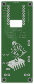

C3 Scout / Carrier C / 05 October 2026
Matched parts.
Fresh factory files.
The approved component substitutions are now in Fusion, with a matched USB-C footprint and a new native manufacturing export.
Board v10 · Schematic v6Native DRC: 0 errors45 assembly placements
Four component selections
Both C1 and J5 are included in factory assembly. Select top-side assembly with through-hole/wave soldering for C1. The ESP32-C3 SuperMini (U1) is installed by hand.
Detailed sourcing workbook
The USB-C footprint is updated
J5 retains its body centre at (28.6, 24.0) mm and 90° rotation, with its mouth facing the right edge. The six contact lands now match SHOU HAN TYPE-C 6P. Four plated slots measure 0.60 × 1.40 mm. Fusion’s 0.25 mm minimum annular ring produces finished copper lands of 1.10 × 1.90 mm around the slots.
The CPL uses the physical body centre for J5; the generic Fusion CAM centroid is (27.48, 24.00) mm. Compare the connector body and mounting slots in JLCPCB’s placement preview. C1’s positive lead is at (23.75, 14.00) mm; negative is at (26.25, 14.00) mm.
 Top · component side
Top · component side
Bottom · viewed from underneathChecked against the saved Fusion design
37 nets and all 56 reference positions are preserved. Both Genie artworks, the 32 × 82 mm outline, antenna opening and four 3.4 mm mounting holes are unchanged. All 45 factory placements match the previous assembly population.
The new native CAM export was independently parsed: 85 round plated holes, four plated connector slots and four nonplated mounting holes; both copper pours are present. Copper, hole, mask, edge and silkscreen spacing checks pass. Schematic ERC retains the same 13 reviewed power-pin/net-name warnings, with no new ERC messages.
Prototype validation remains necessary for the substituted protection pair: the lower-resistance Q1 changes the overcurrent trip point, and U4 has 2.5 V cutoff / 2.9 V recovery with depleted-cell charging support. C1’s FM series endurance is 2,000 hours at 105°C.
Editable source and drawings